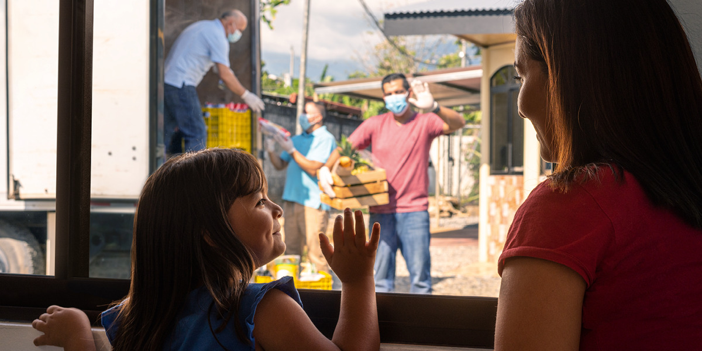

Juntos podemos transformar vidas

A ONG Mãos que Transformam trabalha para apoiar pessoas e famílias em situação de vulnerabilidade.
Por meio de projetos sociais, campanhas e ações voluntárias, buscamos construir uma sociedade mais solidária.